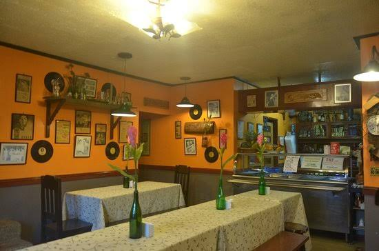

Best Restaurants in Marinduque
Beach Club Cagpo
Beach Club Cagpo is a private beach resort located on the Island of Marinduque in the heart of the Philippine Island.
Club Cagpo features a Restaurant serving European, Asian, and Filipino cuisines, infused with our local herbs and spices grown from our very own herb and vegetable garden.
Address: Barangay Cagpo, Torrijos 4900 Marinduque
Landline: +63(921)993 2537
Email: beachclubcagpo@gmail.com
Cafe Mamita

One of the popular places to dine in Marinduque in Mamita Cafe, situated at the ground floor of Boac Hotel. We had lunch here during our recent trip to Boac
The restaurant exhibits a vintage atmosphere because of its interior and the old photographs hanging on its walls.
Address: San Miguel Boac Marinduque
Landline: 09125457867
Email: ccmamita@gmail.com
Casa De Don Emilio
Another popular restaurant in Boac, located in a chocolate-colored heritage house in Casa Don Emilio fronting the Boac Plaza.>br> The place is beautifully-preserved, dappled with vintage furniture and musical instruments.
Address: San Miguel Boac Marinduque
Landline: 09308917570
Email: donemiliocafea@gmail.com
Curba Grill

The restaurant is new in the town of Mogpog Marinduque. It's main branch is in Buenavista Marinduque and it has also a branch in Boac Marinduque. Marinduque is famous for the celebration of Moriones Fiestival and after along day of tracing the Morions, this restaurant is a perfect place to dine in and relax.
They serve Filipino cuisine such as adobo, pansit, sinigang na fish and pork, menudo and surprisingly pizza.
Address:Boac Marinduque
Landline: 09112357361
Email: grill@hotmail.com
10 Y.o Cafe
The place is kinda new and establish first quarter of 2018. A lot of new and delicious food were serve here
Address:Balaring Boac Marinduque
Landline: 09083427891
Email: 10yocafe@gmail.com
Kusina sa Plaza
The hugely popular place has two sides, one offering buffet-style Filipino specialities, along with noodle and pasta dishes, the other a fast-food cafe doing burger, pizzas coffee and juices.
Address: Boac Marinduque
Landline: 09481263456
Email: kusinasaplaza@yahoo.com
Bfc Restaurant
Bfc Restaurant, Boac, Marinduque is one of the top rated places listed as Family Style Restaurant in Boac.
Address: Boac Marinduque
Landline: 09164523975
Email: bfcresto@gmail.com
La Concha Annex
La Concha Annex is a restaurant on Marinduque Circumferencial Road in Boac.
Address:Boac Marinduque
Landline: 09092467831
Email: laconcha@gmail.com
Sitio Cafe
Sitio Cafe is a new established restaurant in Mogpog and it has a very unique and beautiful design
Address: Gitnang Bayan Mogpog Marinduque
Landline: 09125457975
Email: sitiocafe@gmail.com
Goods Food Hub
Goods Food Hub is a native/ reggae themed restaurant located at Caganhao, Boac, Marinduque. we are serving pansit overload, rolled tacos, grilled siomai, fries sisig, nachos sisig, chicken mami, lomi sisig and we have customized platters that's perfect for your family or friend's gathering.
Address: Caganhao Boac Marinduque
Landline: 09215459856
Email: goodshun@yahoo.com